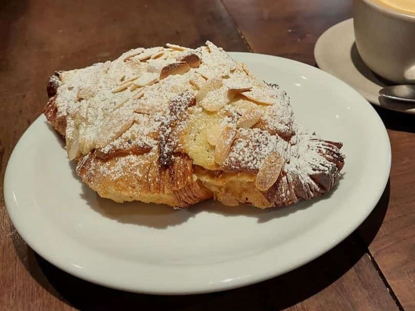
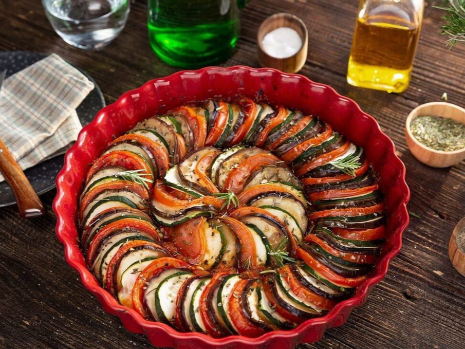

Mineirette
A Fusão da Culinária Francesa com a Mineira, em uma explosão de sabores, sendo servida quente.

Café Expresso
Feito através da passagem de água quente, não fervente, sob alta pressão pelo café moído.

Ratatouille
Receita francesa provençal de legumes cozidos do século XVIII, podendo ser servida quente ou fria.

Croque Monsieur
Sanduíche intercalado com pão de forma feito com requeijão, molho branco, queijo mozarela, presunto e queijo gruyère.